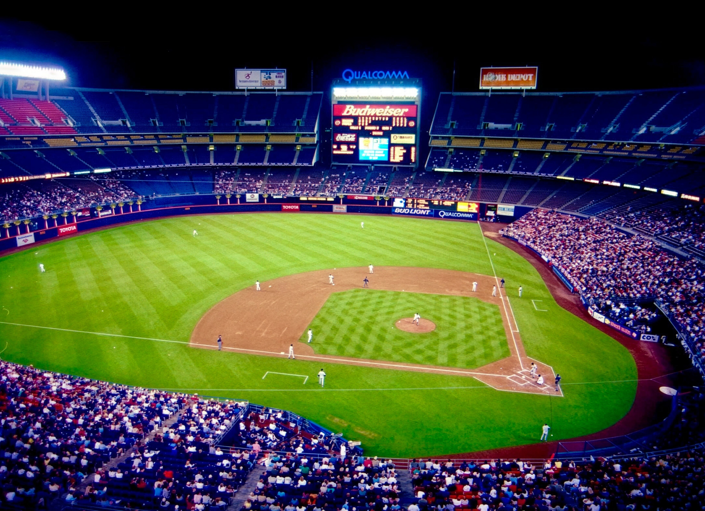

A
· Current — all bottom-left
Baseline. Title anchored low; the black sky at top is unused.

Mission Valley · California
San Diego
Stadium
San Diego, California
1969–2003 · Open-Air Multipurpose Stadium ·
Demolished
B
· Masthead — whole block top-left
Title rides the black sky; photo reads clean below with no bottom scrim.
Mission Valley · California
San Diego
Stadium
San Diego, California
1969–2003 · Open-Air Multipurpose Stadium ·
Demolished
C
· Split — wordmark up, tags down
Recommended. Wordmark on black up top; location + lifecycle frame the bottom.
Mission Valley · California
San Diego
Stadium
San Diego, California
1969–2003 · Open-Air Multipurpose Stadium ·
Demolished
D
· Top minimal — wordmark only
Purest use of the black band; no bottom scrim, photo entirely open.
Mission Valley · California · 1969–2003
San Diego
Stadium